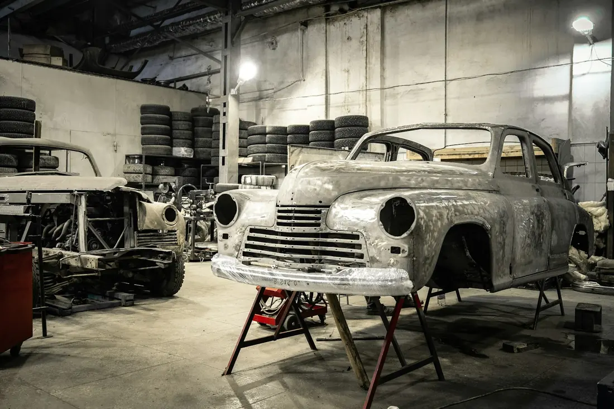
N° 01
Schade na een aanrijding
Een klap van achteren, een zijdelingse aanrijding of een paal die net te dichtbij stond. Ook als er onderdelen besteld moeten worden.
Bel voor een afspraak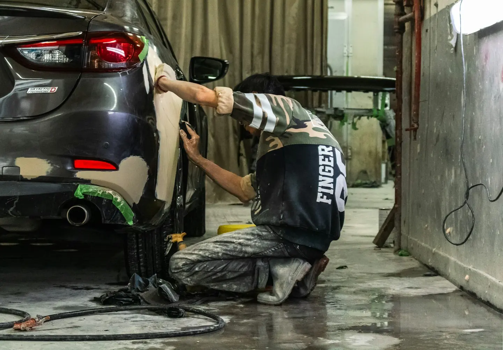
Een deuk in de deur, een kras langs de zijkant of een stevige klap van achteren. In de werkplaats aan de Kwadestraat wordt je wagen hersteld en gespoten tot je niet meer ziet waar het gebeurde.
Van een klein krasje tot een wagen die er na een aanrijding stevig aan toe is. Alles gebeurt in de eigen werkplaats in Rumbeke.

Een klap van achteren, een zijdelingse aanrijding of een paal die net te dichtbij stond. Ook als er onderdelen besteld moeten worden.
Bel voor een afspraak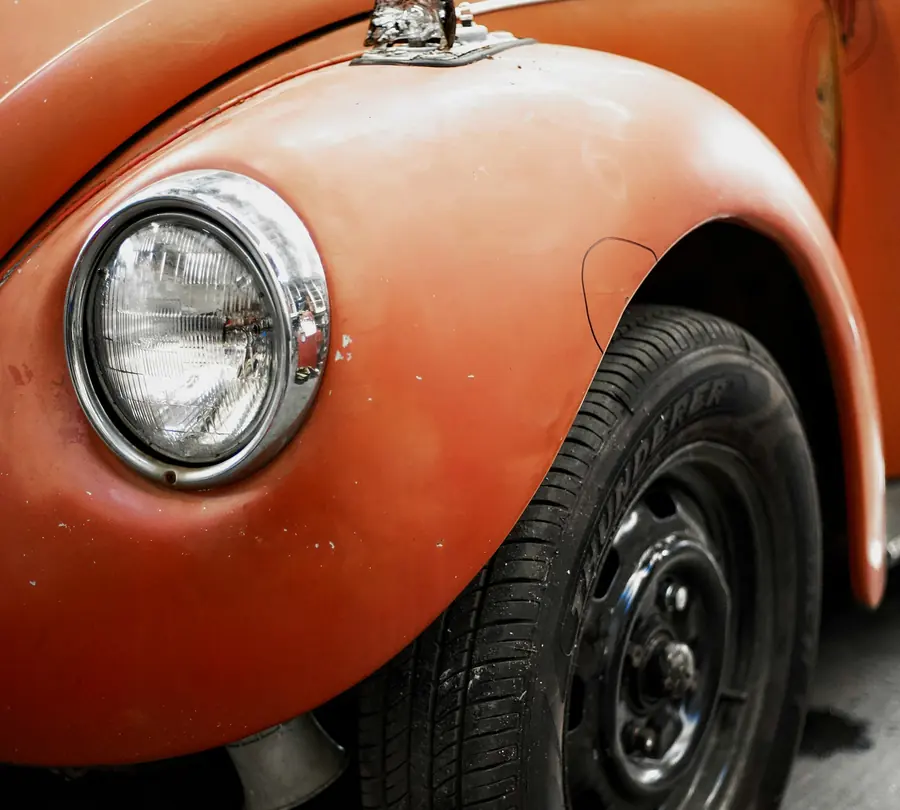
Een deuk in de deur, een kras langs de zijkant of een winkelkar die tegen je wagen rolde. Uitgedeukt en bijgewerkt.
Bel voor een afspraak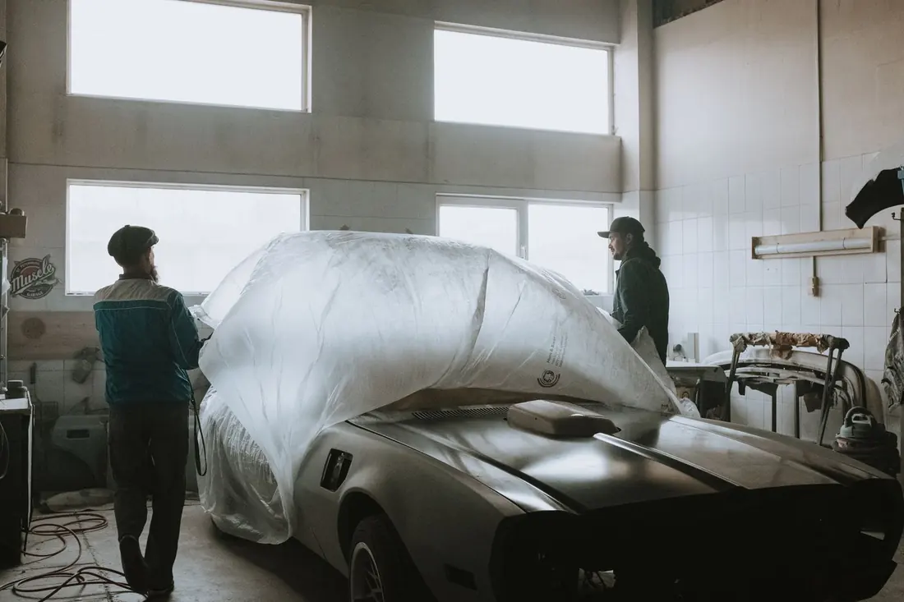
Afplakken, voorbereiden en spuiten in de kleur van je wagen. Tot je het verschil met de rest niet meer ziet.
Bel voor een afspraak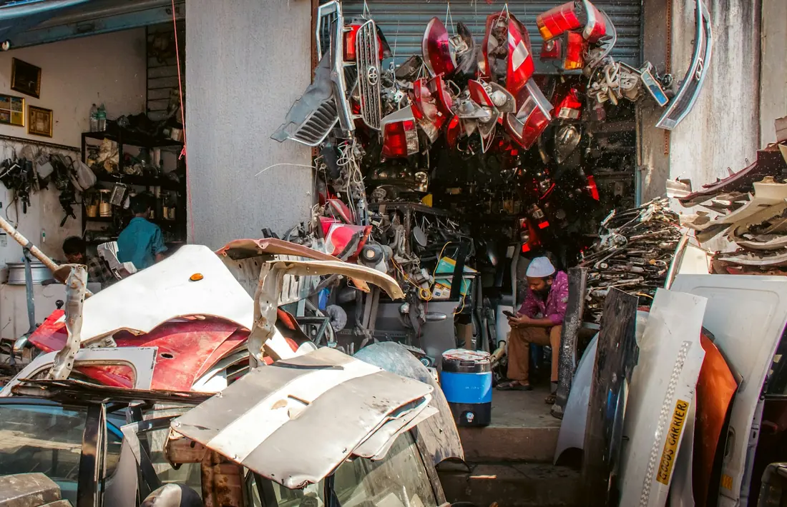
Een gebarsten bumper, een gebroken spiegel of een spatbord dat vervangen moet worden.
Bel voor een afspraakEen carrosserie is handwerk. Uitdeuken, plamuren, schuren en spuiten, laag na laag. Pas als de lak in het licht klopt, staat je wagen klaar.
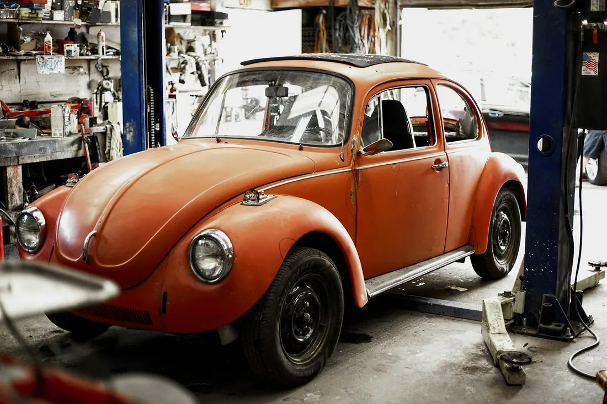
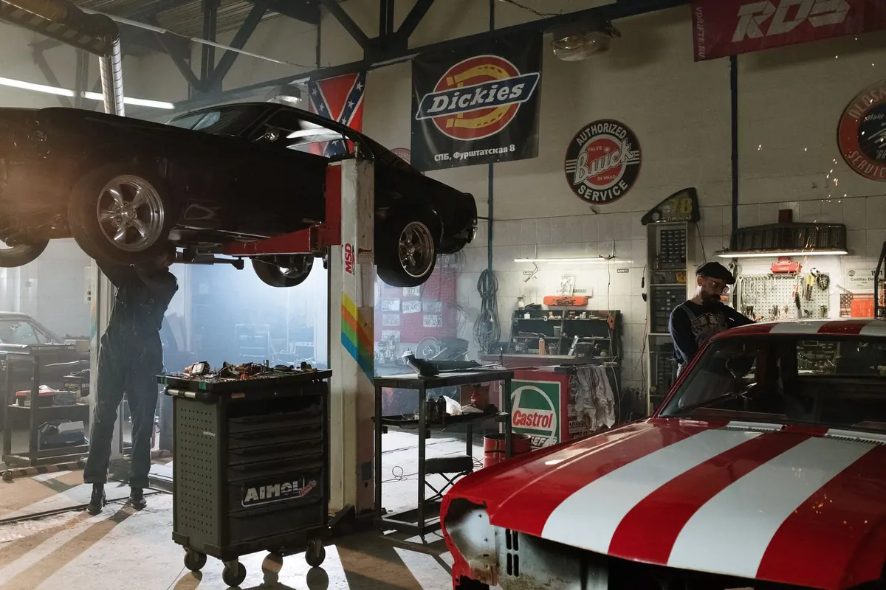
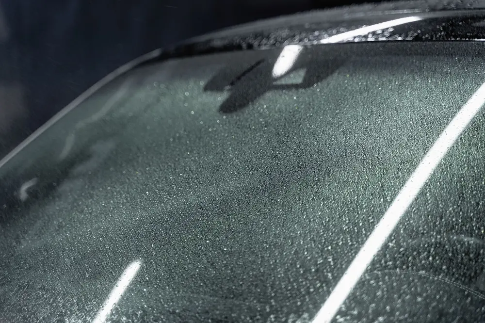
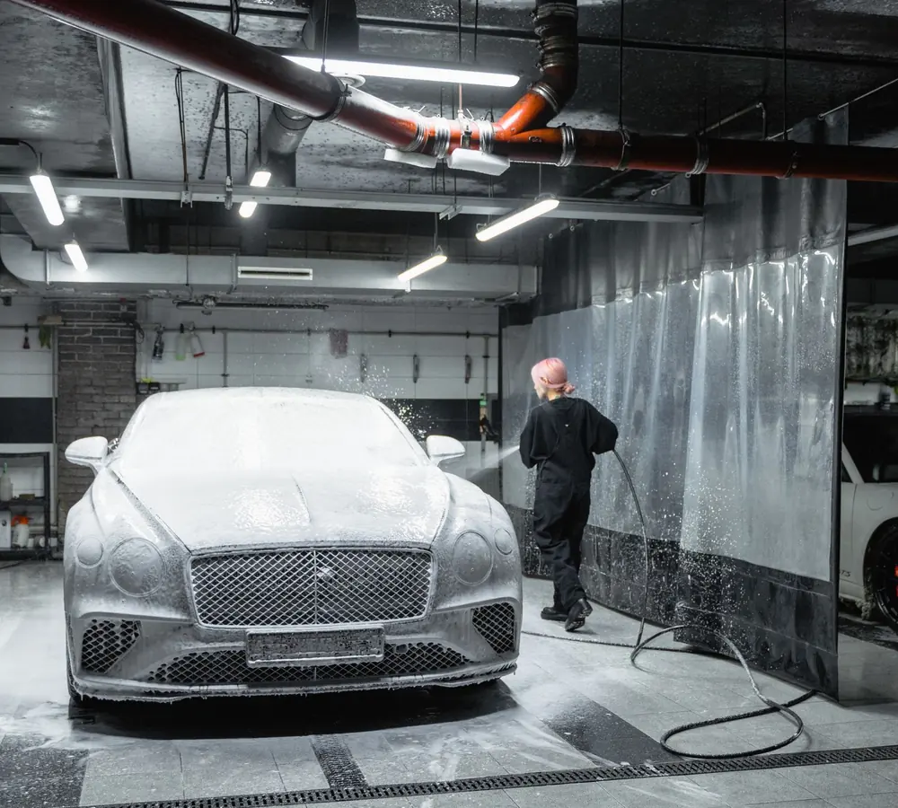
Geen ingewikkelde procedures. Vier stappen, en je weet telkens waar je wagen staat.
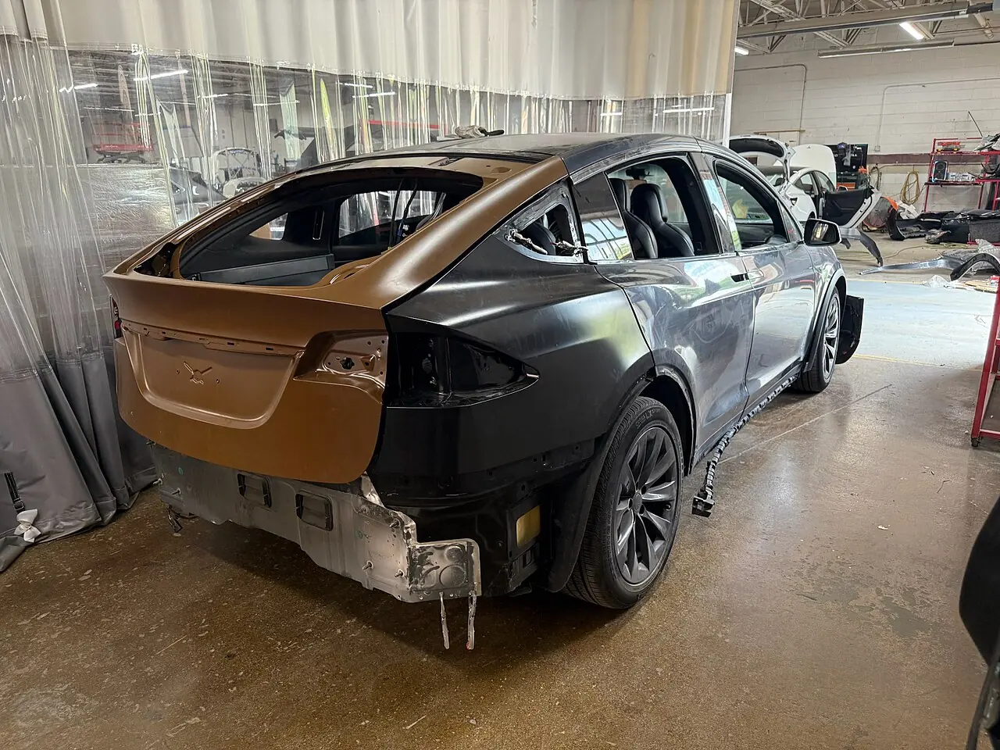
Na een aanrijding telt elk detailEven van slag na de klap is normaal. Overloop dit lijstje, dan sta je later sterk bij de verzekering.
Uit 33 reviews van klanten die hun wagen hier lieten herstellen. Lees ze gerust voor je belt.
Lees de reviews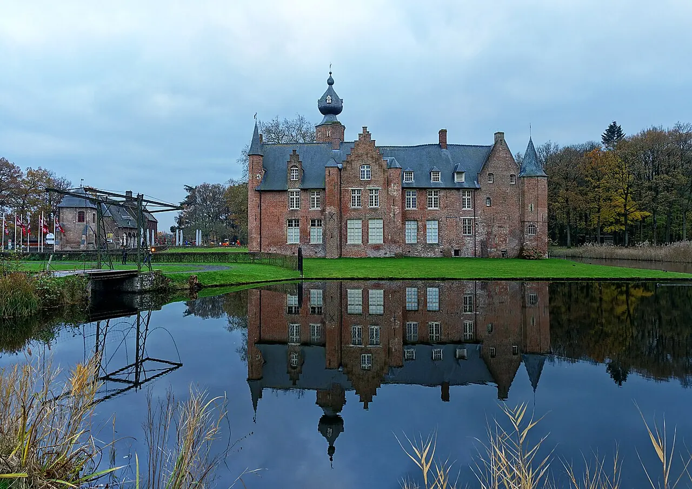
Kasteel van Rumbeke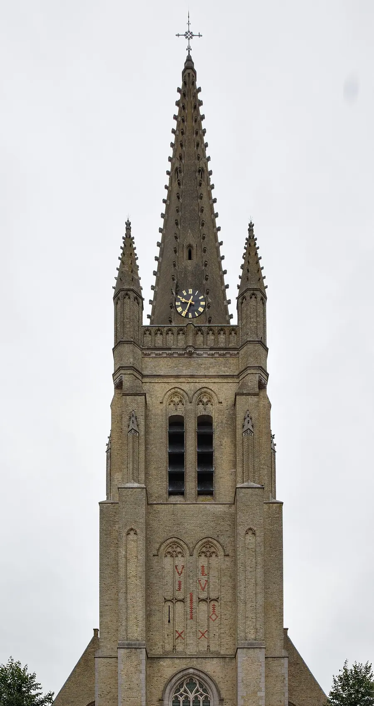
Sint-Petrus-en-Pauluskerk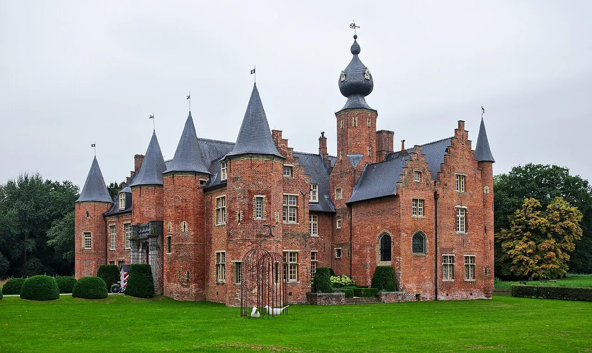
Het kasteelCarrosserie Seynaeve zit in de Kwadestraat in Rumbeke, deelgemeente van Roeselare. Het Kasteel van Rumbeke en het Sterrebos liggen op een kleine twee kilometer.
| Maandag | 8 tot 19 uur |
| Dinsdag | 8 tot 19 uur |
| Woensdag | 8 tot 19 uur |
| Donderdag | 8 tot 19 uur |
| Vrijdag | 8 tot 19 uur |
| Zaterdag | 8 tot 19 uur |
| Zondag | gesloten |
Op feestdagen kunnen de uren anders zijn. Bel gerust even op voorhand.
Staat je vraag er niet tussen? Bel naar 051 21 04 55.
In de meeste gevallen wel. Sommige verzekeraars geven een voordeel als je naar een hersteller uit hun netwerk gaat. Kijk het na in je polis of vraag het aan je makelaar.
Bij een grotere schade via de verzekering stuurt de verzekeraar meestal eerst een expert. Wacht zijn akkoord af voor de herstelling start, dan zit je goed.
Is de dader onbekend, dan kan het enkel via je eigen omnium, als je die hebt. Doe zeker aangifte bij de politie en neem meteen foto's.
Dat hangt af van de schade en van de onderdelen. Een kras is iets anders dan een aanrijding waarvoor onderdelen besteld moeten worden. Na het bekijken weet je het.
Dan betaal je de herstelling zelf. Kom gerust eerst langs of stuur foto's, dan weet je waar je aan toe bent voor je beslist.
Foto's van Rumbeke en van de aanrijding: Wikimedia Commons (Trougnouf, Velvet, Scientificranking; CC BY 4.0 en CC BY-SA 3.0)
Ik maakte deze demo voor jullie om te tonen wat er kan. Na een kort gesprek maak ik er iets veel persoonlijkers van, helemaal naar jullie wens.
Vrijblijvend. Ik kom langs of we bellen.
Op maat, op jullie eigen domein.
Geen voorschot. Jullie betalen pas als alles klaar is.
Hosting, domeinnaam en kleine wijzigingen, zoals nieuwe openingsuren.
Omdat een voorbeeld meer zegt dan een mail. Zo zien jullie meteen wat er kan, en het kost jullie niets.
Nee. Het gesprek is vrijblijvend. Vinden jullie het niks, dan is het daarmee gedaan.
Na ons gesprek staat jullie site binnen 10 tot 14 dagen online.
Zeker. Jullie domeinnaam kan gewoon blijven, de nieuwe site komt in de plaats van de oude.
Nee, dat doe ik op basis van ons gesprek. Eigen foto's zijn mooi meegenomen, maar niet nodig om te starten.